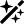

Bootswatch
Add color to your Bootstrap site without touching a color picker.
Easy to Install
Simply download the CSS file from the swatch of your choice and replace the one in Bootstrap. No messing around with hex values.

Whole New Feel
We've all been there with the black bar and blue buttons. See how a splash of color and typography can transform the feel of your site.
Modular
Changes are contained in just two LESS files, enabling modification and ensuring forward compatibility.
The Swatches
-

Cerulean
A calm, blue sky.
-

Simplex
Flat, matte, minimalist.
-

Spacelab
Silvery and sleek.
-

United
Bright colors and a distinctive font.